前言
上一篇我們看到了怎樣安裝 Hexo，並且了解如何將現有的文章轉入進來，接下來，我們就來看看，如何將原始檔 ( Markdown ) 放到 GitHub 進行版控，並且!!把編譯過 ( 將 Markdown 透過 Hexo 轉成 HTML ) 的 HTML 放到 GitHub 上。
使用 GitHub 當作 Blogger
目前 GitHub 有支援個人與專案，一個帳號，可以建立一個個人網站和多個專案網站。詳細可以參考底下兩篇。
個人
專案
為什麼要備份 Source 到 GitHub
現在是版控的時代了，除了程式碼要版控之外，圖檔要版控，甚至連虛擬機都要版控 ( Docker ) ，那文章勒，文章其實也可以版控，但我們版控的不是 HTML ，而是 Markdown，Markdown 就猶如我們的 Source Code，而 HTML 就如同是編譯過執行程式。
既然我們選擇使用 GitHub , 那自然就使用 GitHub 進行版控吧!
( 當然，別忘了先在 GitHub 上開個 Repo 阿!! , 也別忘了要先安裝 git 應用程式喔!! )
git 初始化與設定
首先，大家非常不陌生的 git init ，初始化一下。
1 | git init |
透過 git init 我們就可以針對此目錄下進行版控。
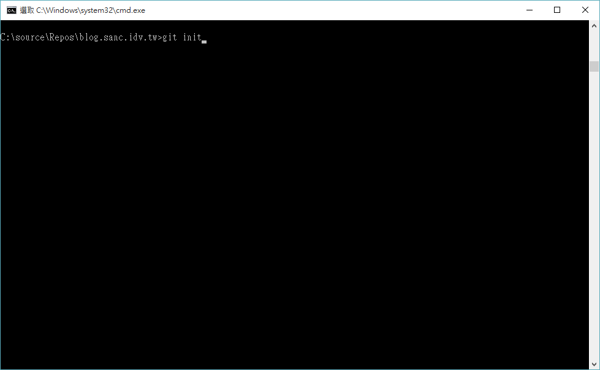
接下來，我們就可以透過底下指令，加入遠端的位置，到時候我們就可以 sync 上去。
1 | git remote add origin git@github.com:帳號/Repo |
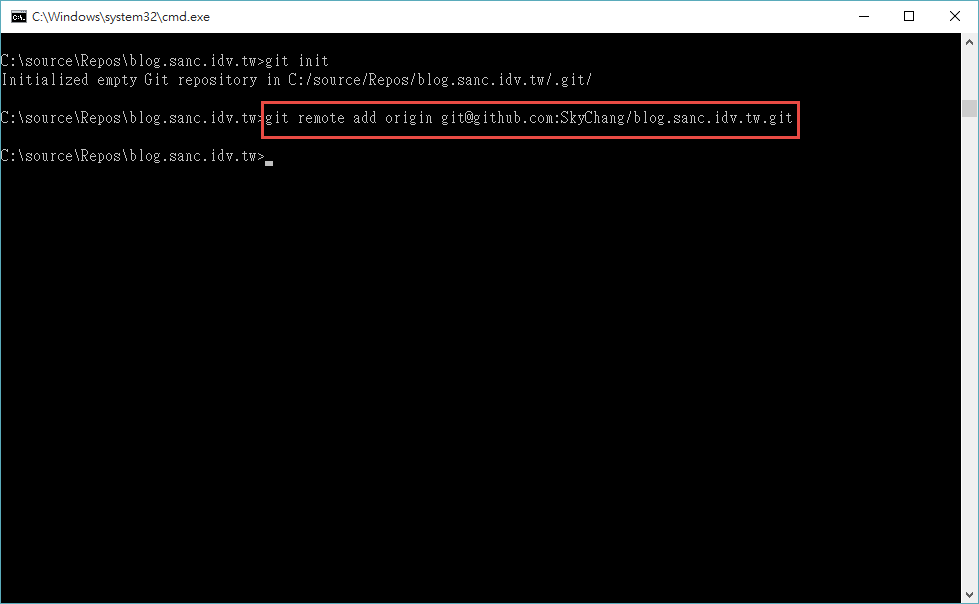
當然，如果這樣就成功了，就不會有這篇了，如果此時你直接下 git push ，那會出現權限不足的問題，而這邊，我們透過產生金鑰的方式，這樣就不用每次都需要 key 帳號密碼。
我們先到 .ssh 的目錄底下去，原則上，看到的應該是空的 ( 只會有 known_hosts ) ，如果有看到 id_rsa.pub 也可以直接拿來用，如果沒看到，我們就來產生一個吧!!
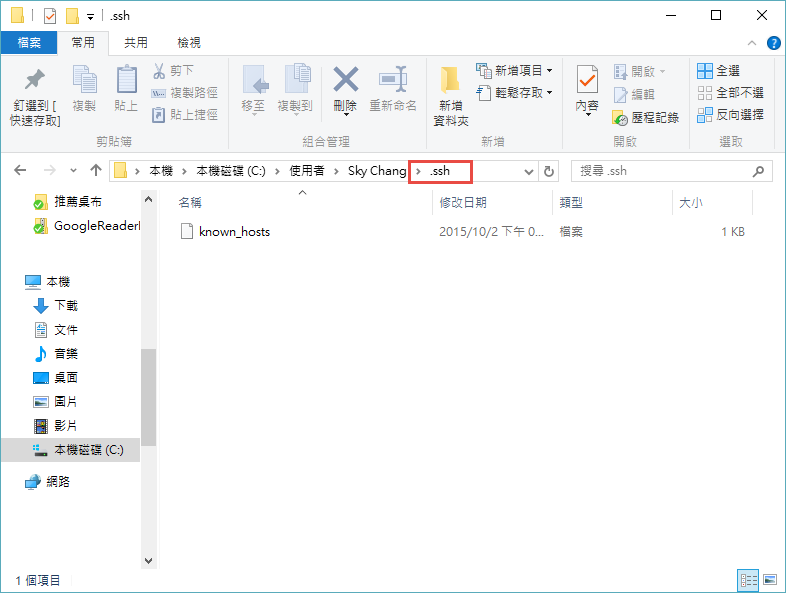
我們可以到 program Files\Git\usr\bin 目錄底下，下這個指令，透過這個指令，就可以幫我們產生金鑰。
1 | ssh-keygen -t rsa -C "你的Email" |
預設金鑰就會產生到 .ssh 底下去。
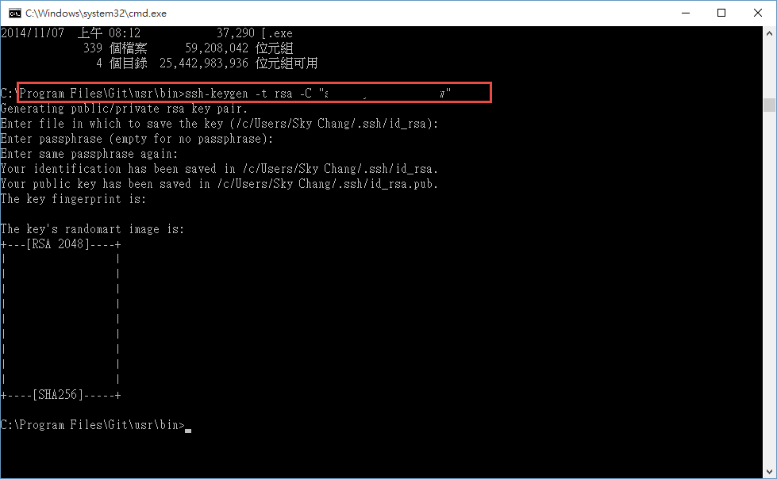
如下圖，我們就可以看到 id_rsa 和 id_rsa.pub 這兩個檔案嚕!!
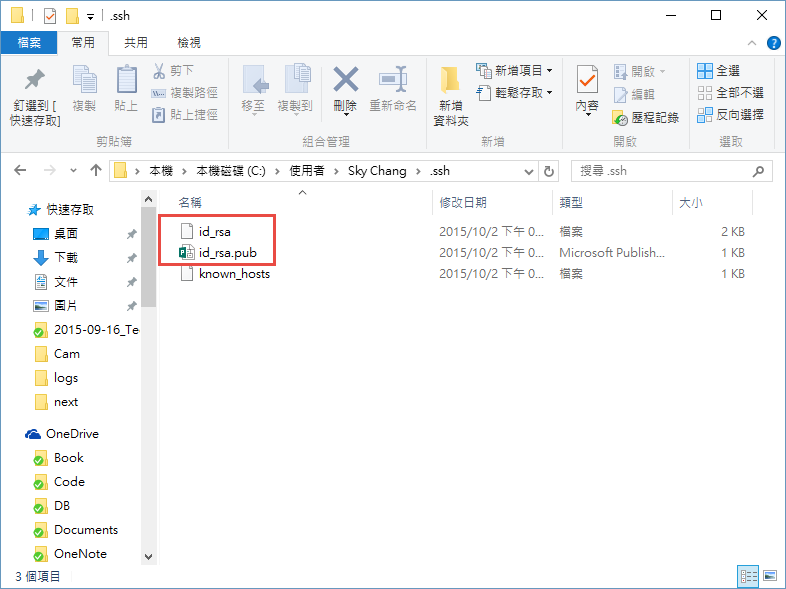
接下來，我們打開 id.rsa.pub ( 用記事本開啟 )，我們把底下的金鑰 copy 下來。
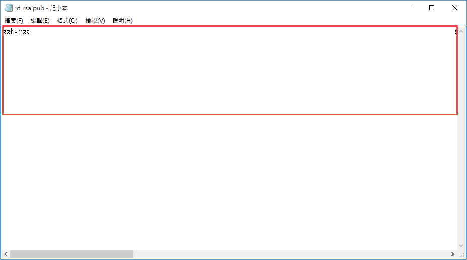
然後貼到 GitHub 上去。
( 注意，GitHub 可以針對 專案 進行金鑰的設定，如下圖，或是整個帳號，如下下圖，你可以決定你的金鑰的範圍，但是一組金鑰，只能出現在 GitHub 的這個帳號底下一次，也就是說，如果你把金鑰拿去設定 專案 ，那你就不能用同樣的金鑰設定在其他的專案上了 )
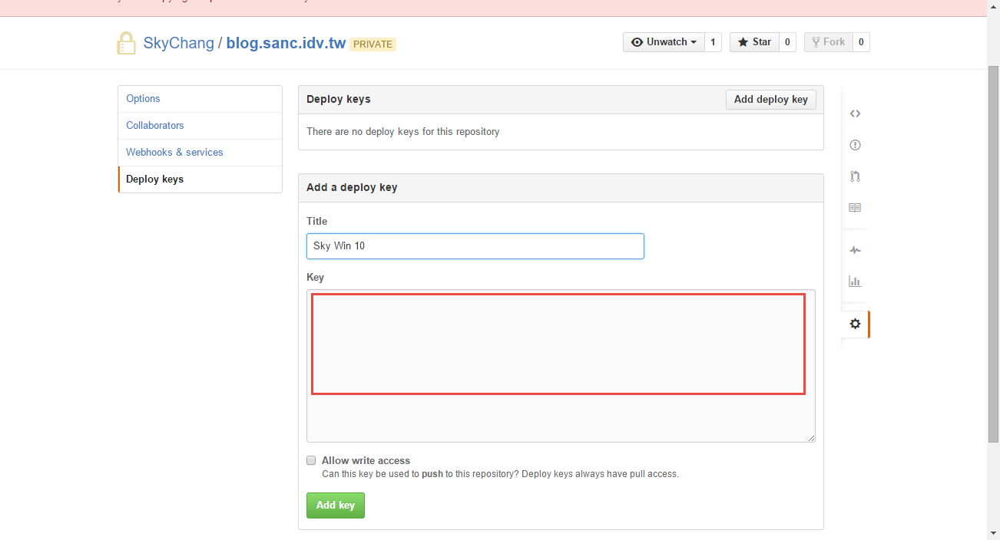
如果要設定給完整帳號，我們可以從帳號設定的底下進行金鑰的貼上，貼上後，就可以了。
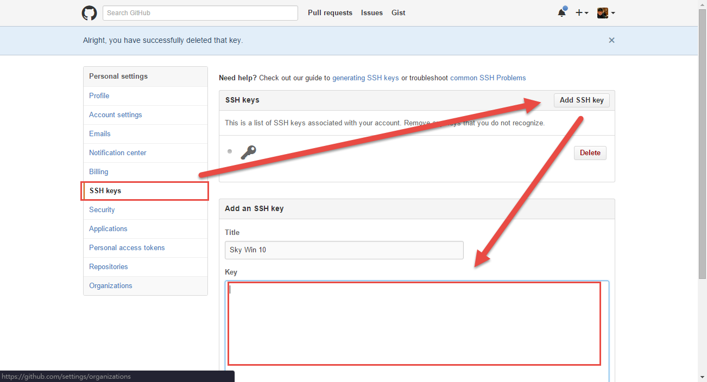
推送到 GitHub
接下來，就是大家熟悉的指令了….
首先，把網站的 source 全部加入…. ( 這邊不用擔心編譯過後的 HTML 也被加入進去，當我們使用 Hexo init 的時候，預設就會把 public 這個含有 HTML 的目錄給過濾掉了。 )
1 | git add . |
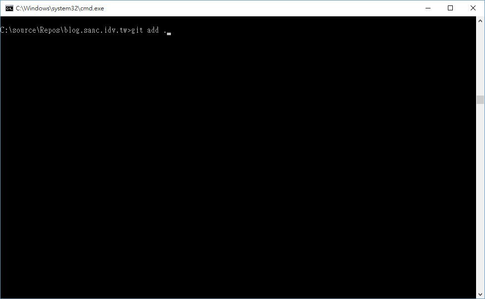
然後，簽入到本機。
1 | git commit -m "First" |
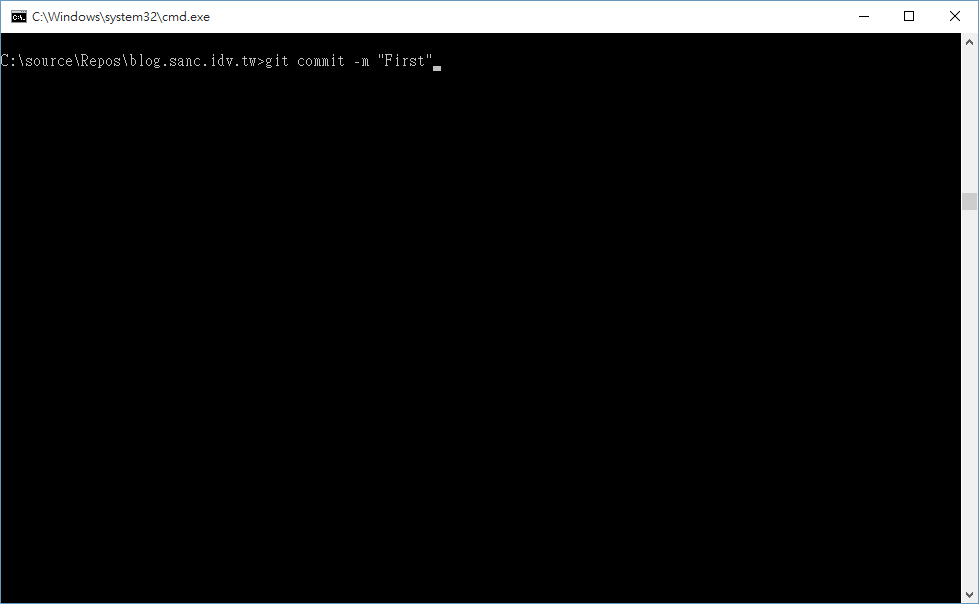
推送到 GitHub。
1 | git push origin master |
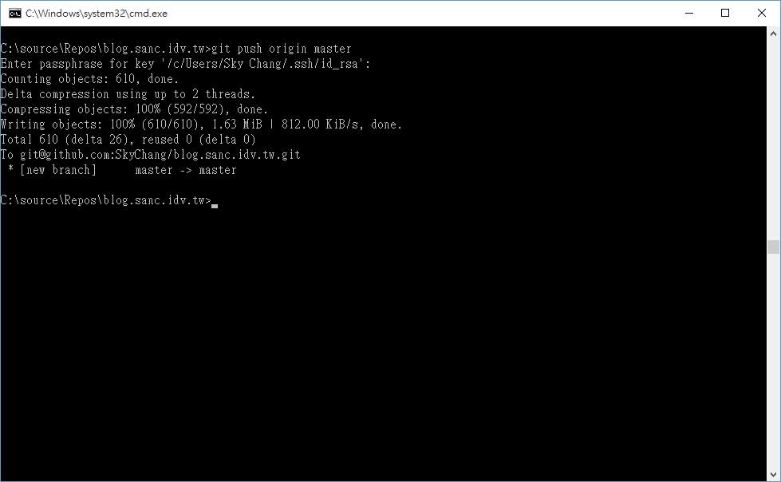
到這邊，我們 source 就可以安心地放到 GitHub 進行版控嚕….
進行佈署
在開始前，我們要先裝 hexo-deployer-git ，透過這個套件，才能佈署到 GitHub 上。
我們可以到我們的 hexo 目錄底下，透過底下指令進行安裝。
1 | npm install hexo-deployer-git --save |
接著，我們要開始進行佈署，首先，我們要修改 _config.yml 這個檔案，如下圖。
這邊表示我們要使用 git ，並且設定遠端的 repo。
如果有分支需求的朋友，可以參考官網的設定，官網也有許多 FTP 等地佈署方式。
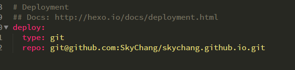
然後，我們要先把我們的 Markdown 編譯成 HTML。
1 | hexo g |
接著，我們只要下底下指令即可，hexo 就會自動的把 HTML 佈署到 github 上了。
1 | hexo deploy |
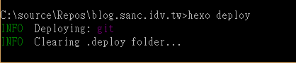
完工!!
等等，新文章哩!!?
是低，下一篇，我們即將針對新文章的撰寫，來和大家講一些小技巧。
參考資料
- http://serverfault.com/questions/78048/whats-the-difference-between-ip-address-0-0-0-0-and-127-0-0-1#comment63540_78049
- http://wsgzao.github.io/post/hexo-guide/
- https://github.com/iissnan/hexo-theme-next
- https://git-scm.com/book/zh-tw/v1/%E4%BC%BA%E6%9C%8D%E5%99%A8%E4%B8%8A%E7%9A%84-Git-%E7%94%9F%E6%88%90-SSH-%E5%85%AC%E9%96%8B%E9%87%91%E9%91%B0
- https://gist.github.com/adamjohnson/5682757